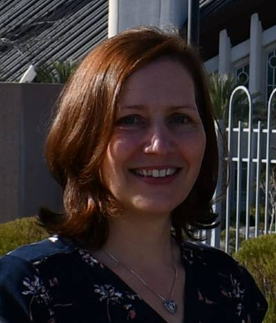

Sarah Kerby | WDD 130
I am Sarah Kerby. I grew up with my 7 brothers among the cornfields of Iowas. Over 20 years ago, my husband and I moved our young family to an industrial area in the state of Michigan. I love volunteering in the community and supporting my family. I love learning new things and have been taking a variety of classes online through BYU-I. After taking a Landscape Design class, I reworked my entire yard and am still busy making it more appealing.